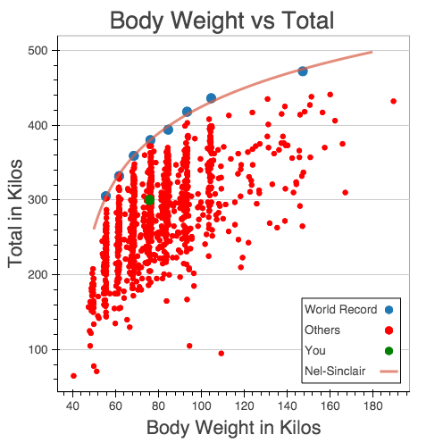

The Sinclair total has been the standard for comparing two lifters and determined who was the best for more than 35 years. It does so by projecting how much would a lifter total if he or she were to move up to the heaviest weight class. To do this the Sinclair Formula uses the body and total of the current world record holder in the 105+ weight class.
We are now introducing the Nel-Sinclair Algorithm, which finds the best logarithmic curve that best describes the current eight world records. This simplifies the comparison among lifters by simply reducing it to a question of who is closest to the Nel-Sinclair Curve. Sinclair knew the relation between body and total followed a logarithmic curve, so the Nel-Sinclair formula uses that principle, but instead of using one record holder as a reference we use all eight. The Nel-Sinclair Coefficient is then a measure of how many kilos away you are from being the best in the world.
We've developed a web app that allows you to see world records and the Nel Sinclair curve, as well as where would your numbers place you against the top thousand totals recorded in meets throughout the current year. So enter your numbers and see where you stand for yourself.
Here's an example of how the web app looks like:
